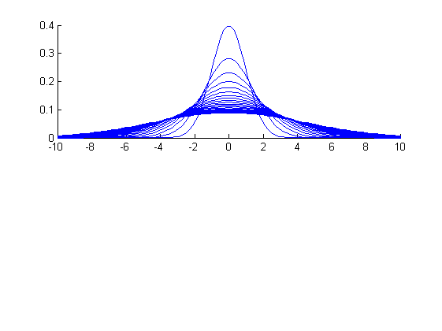
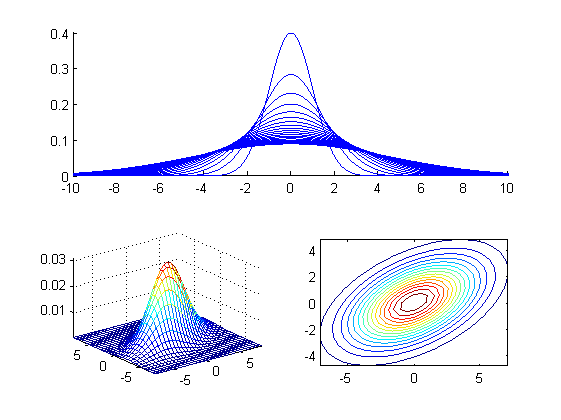

gaussian
Multi-dimensional Gaussian propability density function
Contents
Syntax
- out = gaussian(data, gPrm)
Description
out=gaussian(data, gPrm) return the probability of given data over Gaussian PDF with parameter gPrm.
- data: d x n data matrix, representing n data vector of dimension d
- gPrm.mu: d x 1 vector
- gPrm.sigma: covariance matrix of 3 possible sizes
- 1 x 1: scalar times an identity matrix
- d x 1: diagonal
- d x d: full
- out: 1 x n vector of likelihood
Example
Plot 1-D Gaussians
x=linspace(-10, 10); subplot(2,1,1); gPrm.mu=0; hold on for i=1:20 gPrm.sigma=i; y=gaussian(x, gPrm); plot(x,y); end hold off;
Plot 2-D Gaussians
gPrm.mu=[0; 0];
gPrm.sigma=[9 3; 3, 4];
bound=8;
pointNum=31;
x = linspace(-bound, bound, pointNum);
y = linspace(-bound, bound, pointNum);
[xx, yy] = meshgrid(x, y);
data = [xx(:), yy(:)]';
out = gaussian(data, gPrm);
zz = reshape(out, pointNum, pointNum);
subplot(2,2,3);
mesh(xx, yy, zz);
axis([-inf inf -inf inf -inf inf]);
subplot(2,2,4);
contour(xx, yy, zz, 15);
axis image;
 Check integration
gPrm.mu=1; gPrm.sigma=2; area = quad('gaussian', -10, 10, [], [], gPrm); fprintf('The integration from -10 to 10 for a Gaussian is %g.\n', area);
The integration from -10 to 10 for a Gaussian is 1.